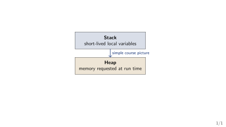
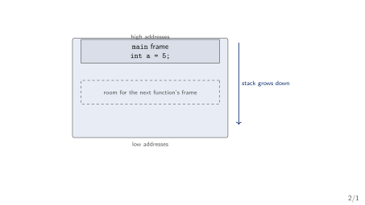
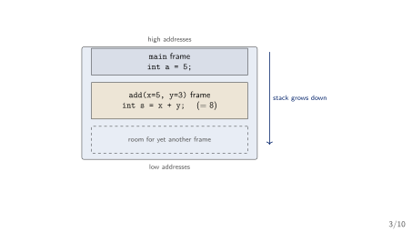
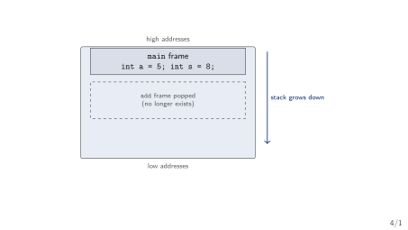
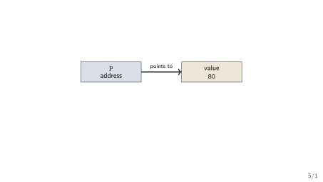
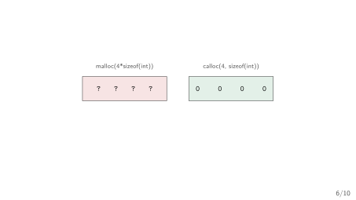
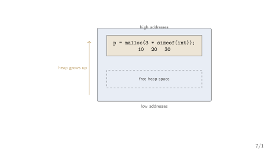
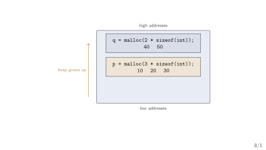
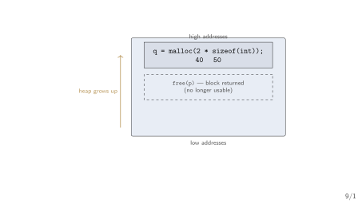
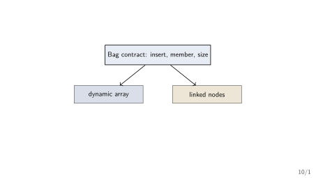

Week 1 — Pointers, Dynamic Memory, and Simple Contracts
GCET Ganderbal
Plan. First draw the memory. Then use one pointer. Then write one simple contract.
A correct program can still be unusable. A loop that scans student records one by one always finds the right student — and with 5 records it is instant.
Data structures keep a correct program useful as the data grows.
“How long will my program take? Why does my program run out of memory?” — questions far too vague to answer precisely without a model (Sedgewick and Wayne 2011).
By the end of Week 12 you will say why a structure is fast, not just that it felt fast.
Each week repeats one shape: state the contract, then implement it, then analyse what it costs.
Our running example. A small expression processor reads (a+b)*c and must check its brackets, convert it, evaluate it, and look up its identifiers.
This is not twelve unrelated topics; it is one program learning new tricks each week.
struct for grouping fields.What this course adds. We ask: what arrangement of data fits this job? — and we answer with a contract, an implementation, and a cost.
Before any structure: where does a program even put its data?
Example. int marks = 80; stores the value 80 somewhere in memory.
marks.80.An address is like a house number. It tells us where to look.
Section 1
Memory

main starts
main creates one frame holding its local variables.add is called
add pushed a second frame with its parameters and locals.main’s frame.add returns
8 was copied back into main’s frame.Local variable. A variable declared inside a function is created when the function starts.
Example. int score = 80; inside a function is a local variable.
A changing problem. The user enters the number of records only after the program starts.
The heap is useful when the data must be flexible.
Which variable can outlive the function that created it? int score = 80; or int *p = malloc(sizeof(int));
score belongs to its function call.free.Turn and talk. What must remain available if another function needs the record later?
The exact call for this — malloc and sizeof — comes in a few slides.
To use the heap, we need a handle on it — a pointer.
Section 2
Pointers
Definition. A pointer is a variable that stores an address (Wirth 2004).
80.One declaration. int *p; means: p can point to an int.

p does not contain the score itself.p tells us where the score can be found.data stores the value.next stores the address of another node.next = NULL.This is the basic building block for a linked list in a later week.
NULL. NULL means that a pointer is not pointing to a valid object.
Picture. struct node *head = NULL; means “the list is empty”.
Now let us actually request a block of heap memory and use it.
Section 3
One Heap Block
malloc requests bytes from the heap.sizeof(int) asks C for the right number of bytes.p stores the address of the requested space.A safer engineering pattern
sizeof(struct node) asks for exactly one node’s bytes.p->data means: the data field of the node p points at.p->next == NULL.Review checklist. A small program is not finished when it compiles.
NULL?free(p)?Engineering habit. Test the normal path and the allocation-failure path.
p contains an address.80.p itself is not the heap block.Challenge. Which line would fail if p == NULL?

p.*p to write the value 80 there.
malloc with room for three integers grew the used heap upward.
q’s block at a higher address.free returns a block
free(p) gives p’s block back to the system.q’s block is untouched, and the used heap can shrink again.free(p) gives the heap block back to the system.p to NULL makes the old pointer visibly empty.malloc should eventually be freed.Request memory, use it, return it.
free; the block stays reserved.Simple habit. Keep track of who requested the memory and who will return it.
Memory and pointers are the machinery. The contract is the map.
Section 4
Simple Contracts
Abstract Data Type. An ADT describes what we can do with data, without saying how it is stored (Sedgewick and Wayne 2011; Karumanchi 2017).
An ADT has two parts: a declaration of data, and a declaration of operations (Karumanchi 2017).
The pattern you will see every week. Linked Lists, Stacks, Queues, Priority Queues, Binary Trees, Disjoint Sets, Hash Tables, and Graphs are all commonly used ADTs (Karumanchi 2017).
Watch for this shape: “What is a Stack?” then “Stack ADT” then “Implementation” — every week, same order.
The contract. A bag of integers supports three operations:
insert(x) — put x into the bag.member(x) — answer whether x is present.size() — report how many items are present.The contract does not yet say whether the bag uses an array or a list.

The key distinction. Same operations, different internal arrangement.
Classify each statement. Is it part of the contract, or part of one implementation?
member(7) answers yes or no.”size() reports the number of values.”The first and third describe what users can ask. The second describes how.
NULL means “points to nothing”.malloc, check the result, use the block, and call free.Next week. We will learn how to talk about the amount of work an operation needs.
CS301